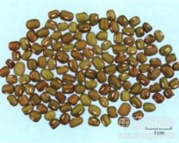

绿豆

拼音
Lǜ Dòu
别名
青小豆（《圣惠方》）
来源
豆科菜豆属植物绿豆Phaseolus radiatus L.，以种子入药。
生境分布
全国大部分地区均有栽培。
药材特点
一年生直立或末端微缠绕草本，被淡褐色长硬毛。小叶3，阔卵形至棱状卵形，侧生小叶偏斜，长4～10厘米，宽2.5～7.5厘米，先瑞渐尖，基部圆形、楔形或截形，两面疏被长硬毛；托叶阔卵形；小托叶线形。总状花序腋生；苞片卵形或卵状长椭圆形，有长硬毛；花绿黄色；萼斜钟状，萼齿4，最下面1齿最长；旗瓣肾形，翼瓣有渐狭的爪，龙骨瓣的爪截形，其中1片龙骨瓣有角；雄蕊10，2束；子房无柄，密被长硬毛。荚果圆柱状，成熟时黑色，长6～10匣米，宽约6.5毫米，被稀长硬毛。种子短矩形，绿色或暗绿色。花期6～7月。果期8月。
性状
干燥种子呈短矩圆形，长4～6毫米，表面绿黄色或暗绿色，光泽。种脐位于一侧上端，长约为种子的1/3，呈白色纵向线形。种皮薄而韧，剥离后露出淡黄绿色或黄白色的种仁，子叶2枚，肥厚。质坚硬。
性味
甘，寒。
功能主治
清热解毒，消暑。用于暑热烦渴，疮毒痈肿等症。可解附子、巴豆毒。
用法用量
0.5～1两，大剂量可用4两，煎服。
化学成分
每百克含蛋白质22.1克，脂肪0.8克，碳水化物59克，钙49毫克，磷268毫克，铁3.2毫克，胡萝卜素0.22毫克，硫胺素0.53毫克，核黄素0.12毫克，尼克酸1.8毫克。蛋白质主为球蛋白类，其组成中蛋氨酸、色氨酸和酪氨酸较少。绿豆的磷脂成分中有磷脂酰胆碱，磷脂酰乙醇胺、磷脂酰肌醇、磷脂酰甘油、磷脂酰丝氨酸、磷脂酸。
药理作用
1：无药理作用数据
摘录
《全国中草药汇编》